DeepL · 2024–2025
Designing a 0→1 logged-in workspace for B2B users
Before this project, logging into DeepL looked almost identical to being logged out. We built the home experience — and a new foundation — from scratch.
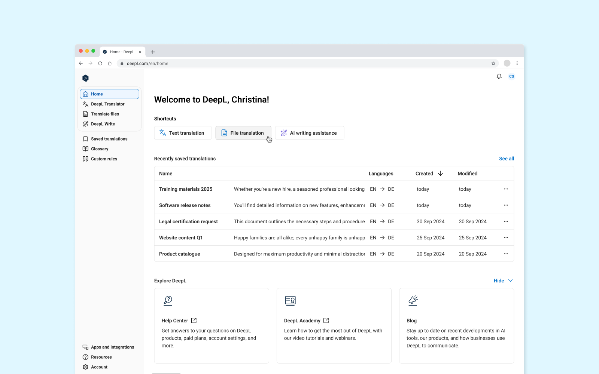
Role
Product Designer
Timeline
Q4 2024 → Q1 2025 (beta)
Full rollout Feb 2025
Team
1 Product Designer (me)
1 Product Manager
1 Engineering Manager
4 Engineers
1 Content Designer
Impact Overview
83% beta preference
500+ enterprise users tested — 83% preferred the new experience over the existing one
180+ companies rebranded
Custom logo activation from day one, validating a long-standing latent need
A platform, not just a page
Admin customization and in-app announcements built on top — without redesigning the foundation
Problem
Logged in, but it didn't feel like it.
Logging into DeepL looked almost identical to being logged out. The only visual difference was the replacement of the login button with an avatar and fewer items on the horizontal navigation bar. For individual users, a minor inconvenience. For enterprise customers, translating confidential data — a real trust concern.
"Am I actually logged in right now?" shouldn't cross a user's mind mid-workflow. But it did.
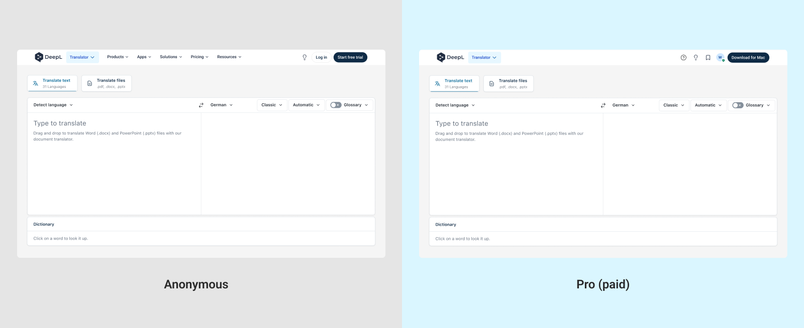
Beyond trust, DeepL had outgrown its navigation. Users now had access to Translator, Write, Glossary, Saved Translations, and more — but the navigation was built for a single-product experience. Features were hard to find, and the workspace was cluttered with marketing content that made sense before login but disrupted work after it.
Admin users had it worst. Their primary job is managing subaccounts — not translating. Yet they were shown the exact same interface as individual end users.
There was no home page, no vertical navigation, and no role-based experience. Everything needed to be built from zero.
Approach
Three user roles. One coherent experience.
The home experience had been discussed internally for over a year. A design sprint had seeded the idea, but nothing shipped because the idea got lost in missing ownership. When the project was finally initiated, a senior product designer started the work — then left the company mid-draft. I took over, inheriting early concepts, and led the project through to launch.
Before any design decisions, I mapped out who we were actually designing for. Three distinct user types emerged — each with meaningfully different jobs to be done.
User type 01: Admin users
Manage subaccounts, users, and permissions. Rarely translate. Need a dashboard oriented around team management.
User type 02: Team members
Translate and write. Need fast access to tools and the ability to pick up where they left off.
User type 03: Prosumers
Single-seat Pro subscribers. Need the security signal and workspace clarity — without team management overhead.
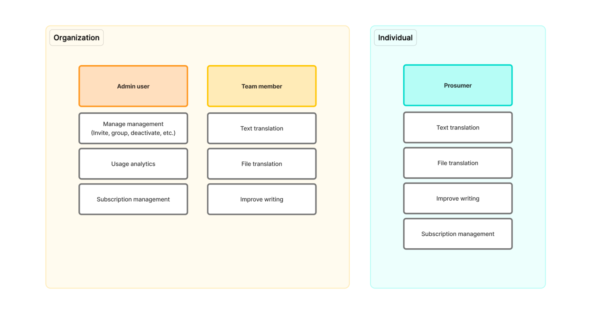
Research
We recruited enterprise customers with 20+ seats on Advanced or Ultimate plans, running 6 prototype tests in September 2024 — 4 with admin users, 2 with end users.
- All participants found the new experience easier to navigate, more intuitive, and cleaner
- Users found Saved Translations and Glossary more easily via the vertical navigation
- Most preferred the full-page Saved and Glossary experience over the old modal approach
The main risk the research surfaced: users landing on the home dashboard had one extra click to reach the translator — a friction point for long-time DeepL users with established habits.
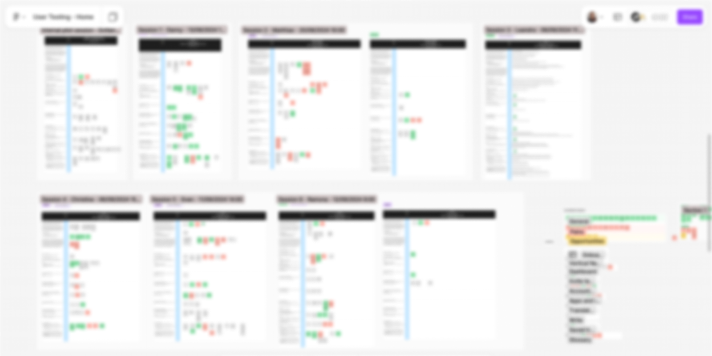
The hardest internal challenge
During dogfooding, we were challenged repeatedly: why are we making users click once more to get to the translator?
The home is not a blocker — it's a workspace. For users who only want to translate, the translator is one click away. For users managing a team or understanding their subscription, the home is exactly where they should land.
We ran a separate solution discovery in Q4 2024 to address the risk, exploring configurable default landing behavior for future iterations.
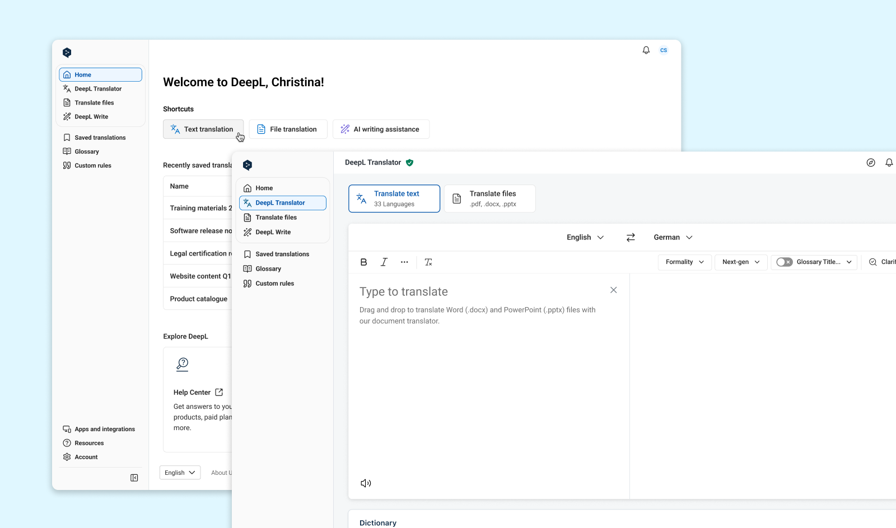
Design principles
Four principles guided every decision throughout the project.
A vertical nav bar — collapsible — that could accommodate DeepL's growing portfolio without restructuring every time a new product launched.
The home Shortcuts section adapts to the user's role. Admins see team management. End users see translation tools and recently saved work.
After login, users should be working — not marketed to. Disruptive dialogs and promotional content were removed from the logged-in experience.
Logo customization — companies display their own brand mark in the navigation — directly addressed the "am I logged in securely?" concern that enterprise users kept raising.
What we descoped
API users were explicitly excluded from Home 1.0. Their primary job on day one is retrieving an API key — not using the DeepL product interface. Including them would have added complexity without meaningful value for that segment.
Solution
A workspace that knows who you are.
The new logged-in experience introduces a vertical navigation bar and a role-aware home dashboard — the first time DeepL had either for Pro users.
1. Vertical navigation bar
Persistent and collapsible. Products, features, and account management accessible from one place — without leaving the current page or hunting through a horizontal menu.
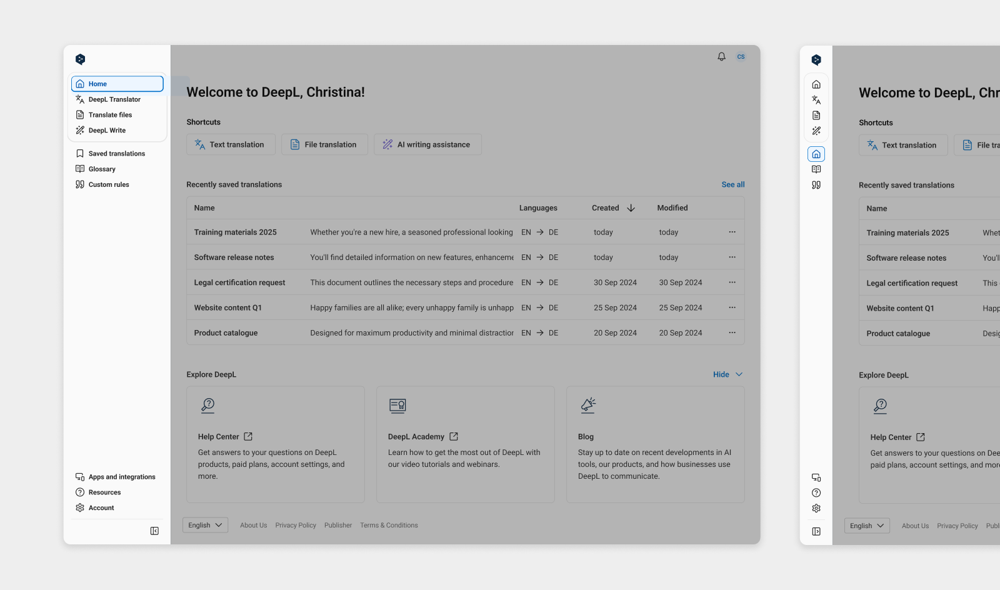
2. Role-differentiated home page
Admins see team management, user seat overview, and account settings. End users see translation shortcuts, recently saved translations, and Glossary access. One home page — two meaningfully different experiences.
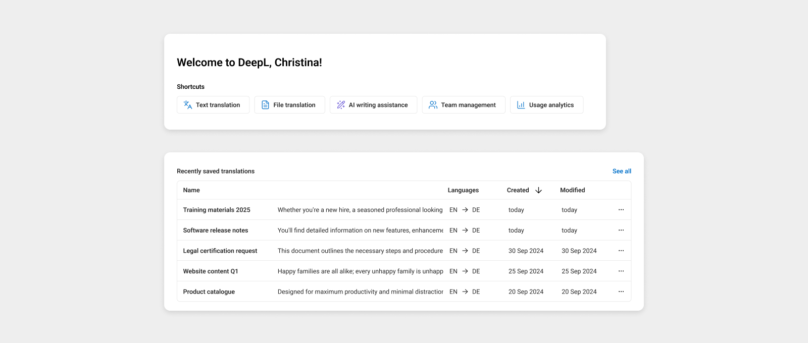
3. Custom logo branding
Enterprise customers with 50+ licenses add their company logo to the navigation bar — a branded DeepL workspace for their employees. The 40×40px square format works in both expanded and collapsed nav states, and mirrors the favicon format most companies already use. One of the most-requested enterprise features. Directly addressed the logged-in trust concern.
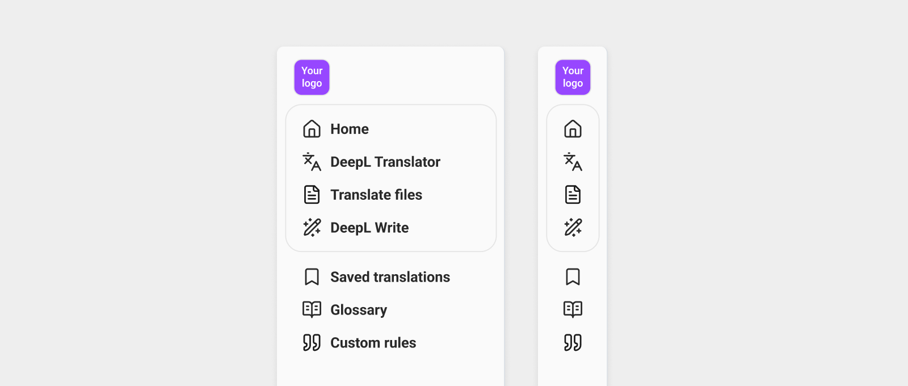
4. Cleaner workspace
Marketing dialogs and promotional content that interrupted the logged-in workflow were removed. The workspace below the fold on every page was decluttered.
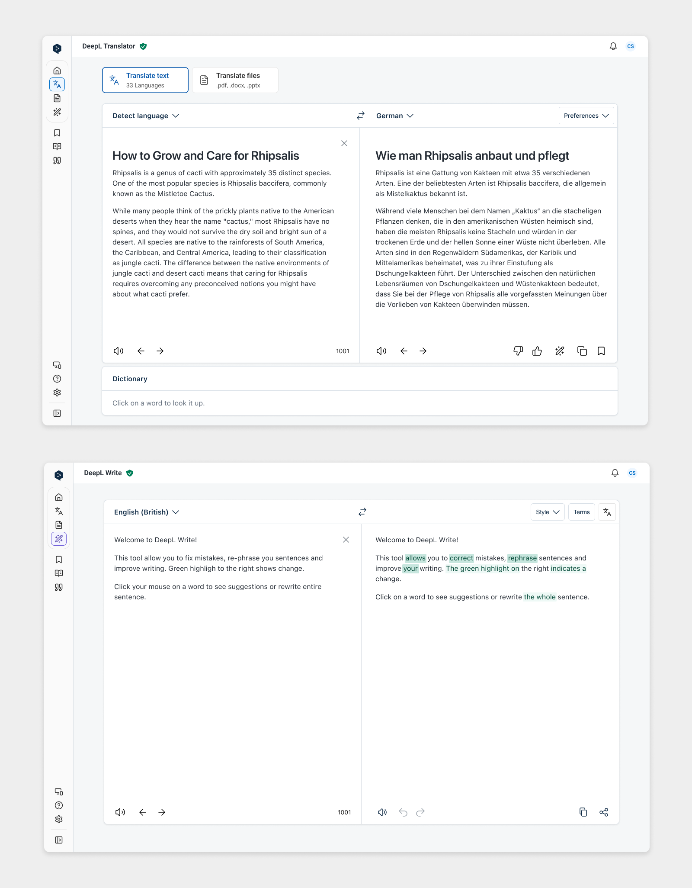
Outcome
83% preferred it. Then other teams built on top of it.
The experience launched in beta to 500+ enterprise users before full rollout in February 2025.
83% — Beta preference rate
Real enterprise customers — not internal stakeholders — preferred the new experience over the old
180+ companies activated custom branding
From day one of launch, validating how long this had been a latent, unmet need
New features built on the system
Admin navigation customization and an in-app announcement system — both built on top without redesigning the foundation
Navigation now personalizable
The system evolved to support granular persona-based customization — something that would have required a full redesign without the scalable foundation
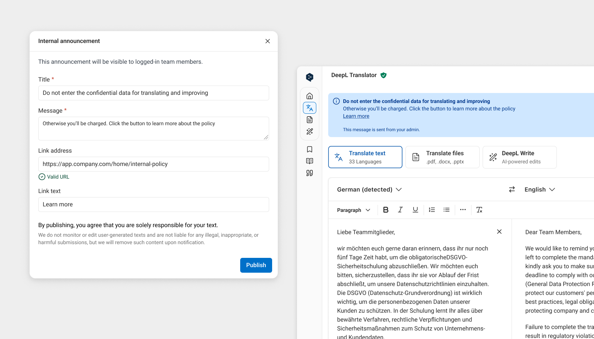
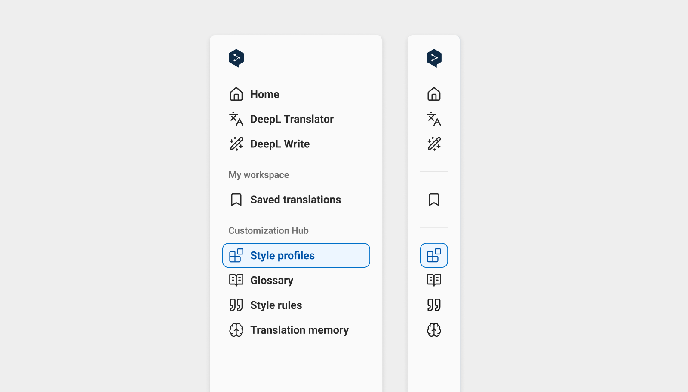
What I'd do differently
The extra click to reach the translator remains a friction point for habitual users. Letting users choose their default landing page — Home or Translator — was identified as the clearest next step but wasn't in scope for 1.0.
Because Home was built on top of the existing product, inconsistencies in margin, padding, and corner radius appeared at the edges. A known constraint — but one that needs active work to resolve as more products join the logged-in experience.
Related work
This case study and the self-serve journey cover both sides of the same B2B user lifecycle at DeepL.
- Self-serve journey — pricing page revamp, add-on flows, and API repackaging. Converting and qualifying B2B buyers before they log in.
- Home experience — this case study. What happens after they do.
Further Reading
DeepL also published a behind-the-scenes article about the redesign process together with our Engineering Manager: Designing a new Pro experience at DeepL .